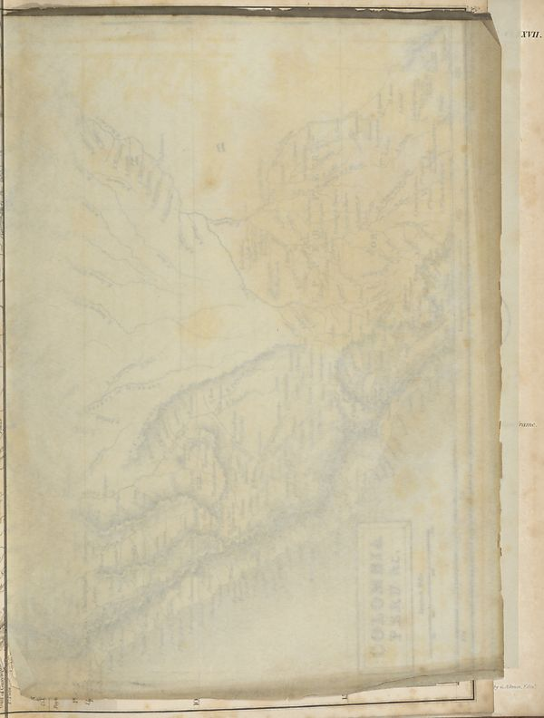

Source · scan and Parse blocks
Layers 1

Parse text by block reading order
- 0PictureXVII.
Provenance page_id, checksum, Parse model
- page_id
- britannica:309f765b1ecc83e0a7f7762e44b4a927a7555443:train:1845
- sha256
- a758ad9d45a7173d220cf1ae4e2c98e462082a9ad3b0185ff4d8121b5631b0fa
- Parse
- nvidia/nemotron-3.5-parse · finish stop